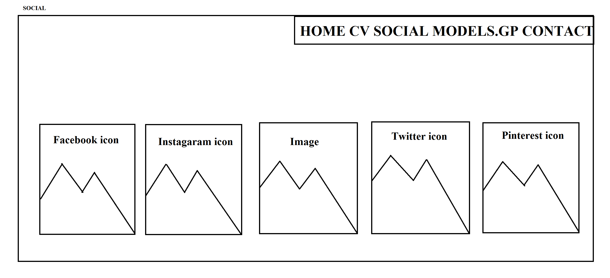
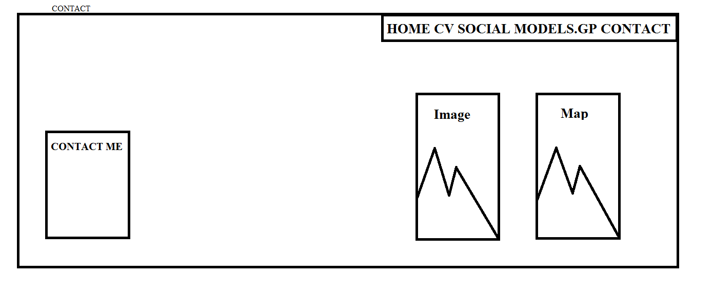

Introduction
This website is about web development cv designed by using html and css based on our module up to week10 of Web development.This website is done by the help of module-tutor,online resources like: W3school and group discussion.It consist of 6 different pages and each page has different criteria.Pages are:
Designs:
Two types of design are mentioned on our report they are mockup of wireframe and wireframe where mockup of wireframe is defined as the computerized sketch form of the handsketch design or wireframe of the website pages and similarly wireframe design is defined as the handsketch designof the different webpage of website in our report.
Mockup of wireframe
HOMEPAGE
ABOUTPAGE
social
contact
cv
wireframe
homepage

aboutpage
socialpage
contact page
cv page

EVIDENCE OF VALIDATED WEBPAGES:
HOMEPAGE

ABOUTPAGE

social

contact

cv

MODELS_GP

SCREENSHOTs:
HOMEPAGE

ABOUTPAGE

social

contact

cv

MODELS_GP

CONCLUSION:
Heartly thankfull to Nami college alligned with the reputed university of united kingdom NORTHAMPTON UNIVERSITY for providing us such a great assignment project which had helped alot more then expected about web designing and using html and css. This project had provided us many resourceful information about designing and also makes us more familiar with html and css like responsive and flex properties which were completely new topics for many student. I had completed this project with a lot of resources and also gained a lot of information on various factors working on this project. This is my first websites so in between the project I got many error and deal with them through the help of module tutor,Internet and Group of my friend to complete the project thus, I feel proud to be the student of NORTHAMPTON UNIVERSITY for providing such a great platform to explore creativity of individual student.